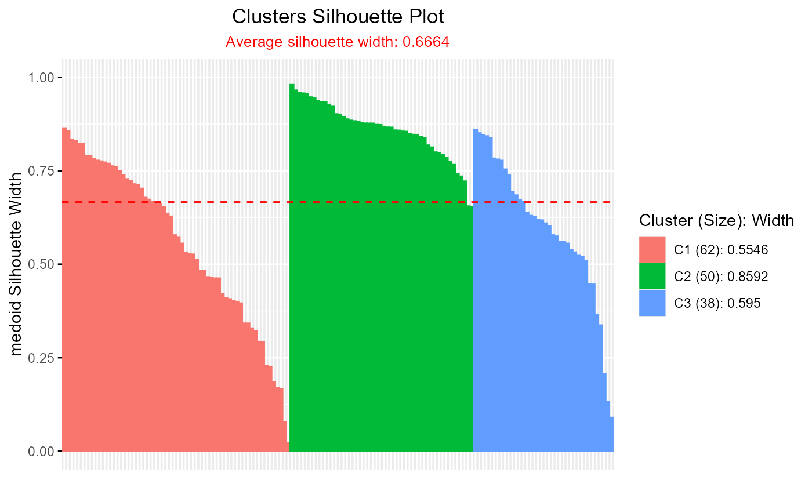
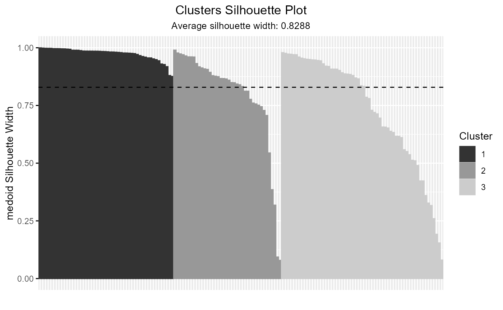
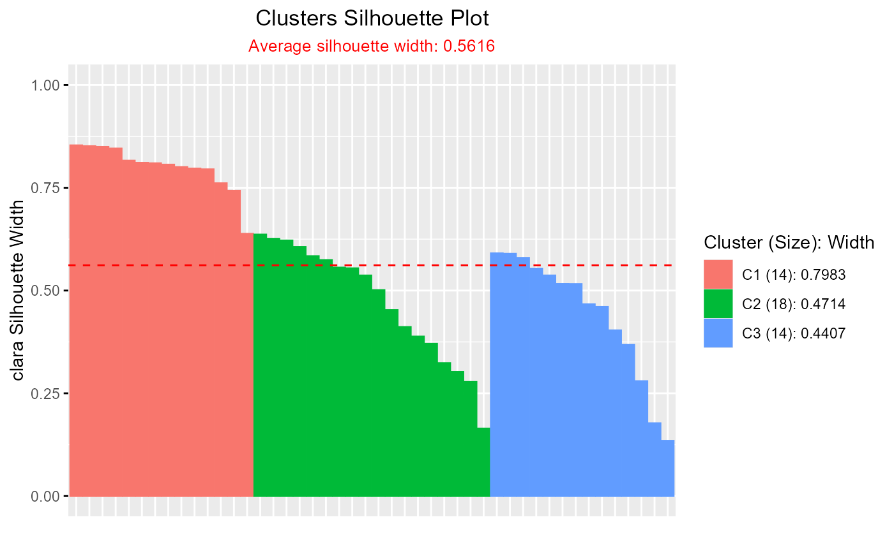
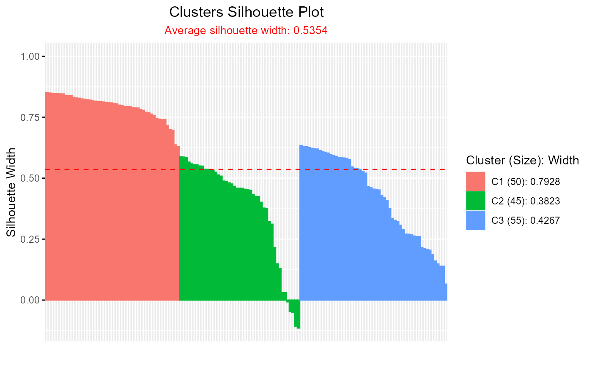
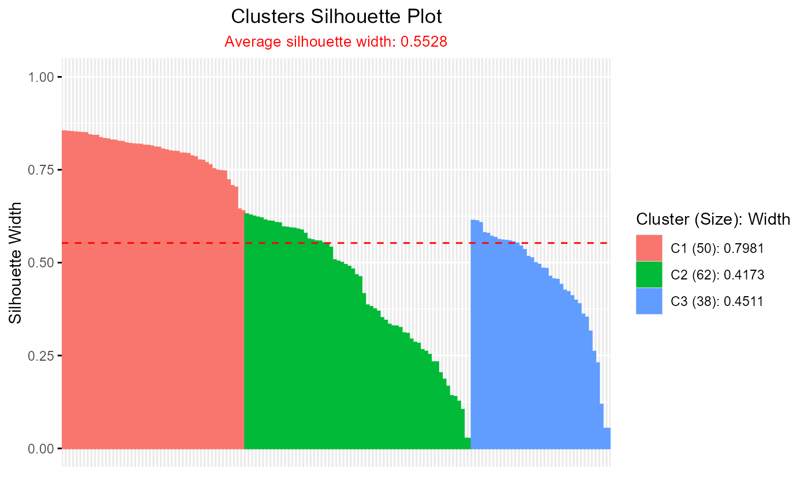
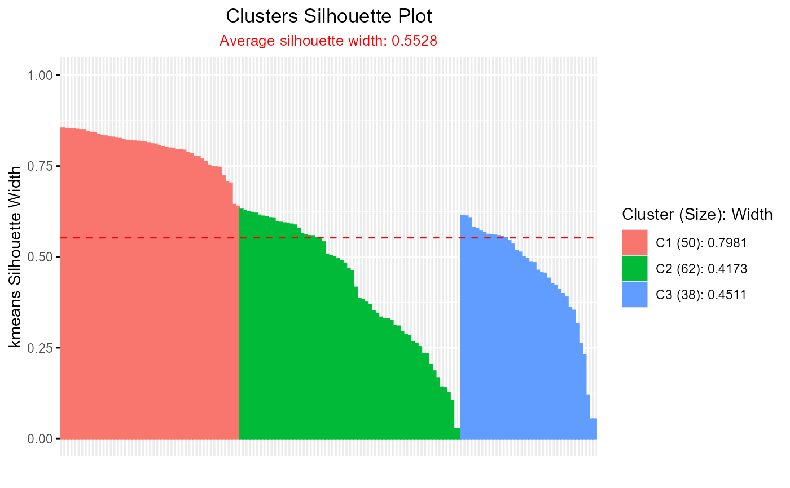
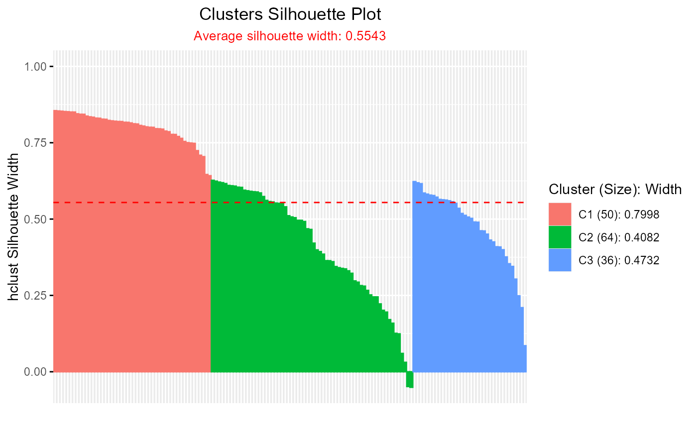

Plot Silhouette Analysis Results
plotSilhouette.RdCreates a silhouette plot for visualizing the silhouette widths of clustering results, with bars colored by cluster and an optional summary of cluster statistics in legend.
Arguments
- x
An object of class
"Silhouette", typically the output of theSilhouetteandsoftSilhouettefunction. Also supports objects classeseclust,hcut,pam,clara,fanny, orsilhouettefrom cluster, factoextra packages. For these classes, explicitly callplotSilhouette()to generate the plot.- label
Logical; if
TRUE, the x-axis is labeled with observation row indices from the input data and titled "Row Index". Defaults toFALSE.- summary.legend
Logical; if
TRUE, prints a summary of average silhouette widths and sizes for each cluster in legend ("Cluster (Size): Width"). IfFALSE, the legend shows only cluster numbers. Defaults toTRUE.- grayscale
Logical; if
TRUE, the plot uses a grayscale color palette for clusters. IfFALSE, uses the default or specified color palette. Defaults toFALSE.- ...
Additional arguments passed to
ggparfor customizing the plot (e.g.,palette,legend).
Details
The Silhouette plot displays the silhouette width (sil_width) for each observation, grouped by cluster, with bars sorted by cluster and descending silhouette width. The summary.legend option adds cluster sizes and average silhouette widths to the legend.
This function replica of S3 method for objects of class "Silhouette", typically produced by the Silhouette or softSilhouette functions in this package. It also supports objects of the following classes, with silhouette information extracted from their respective component:
"eclust": Produced byeclustfrom the factoextra package."hcut": Produced byhcutfrom the factoextra package."pam": Produced bypamfrom the cluster package."clara": Produced byclarafrom the cluster package."fanny": Produced byfannyfrom the cluster package."silhouette": Produced bysilhouettefrom the cluster package.
For these classes ("eclust", "hcut", "pam", "clara", "fanny", "silhouette"), users should explicitly call plotSilhouette() (e.g., plotSilhouette(pam_result)) to ensure the correct method is used, as the generic plot() may not dispatch to this function for these objects.
References
Rousseeuw, P. J. (1987). Silhouettes: A graphical aid to the interpretation and validation of cluster analysis. Journal of Computational and Applied Mathematics, 20, 53–65. doi:10.1016/0377-0427(87)90125-7
Examples
# \donttest{
data(iris)
# Crisp Silhouette with k-means
out <- kmeans(iris[, -5], 3)
if (requireNamespace("proxy", quietly = TRUE)) {
library(proxy)
dist <- dist(iris[, -5], out$centers)
plot(Silhouette(dist))
}
#>
#> Attaching package: ‘proxy’
#> The following objects are masked from ‘package:stats’:
#>
#> as.dist, dist
#> The following object is masked from ‘package:base’:
#>
#> as.matrix

#' # Fuzzy Silhouette with ppclust::fcm
if (requireNamespace("ppclust", quietly = TRUE)) {
library(ppclust)
out_fuzzy <- Silhouette(
prox_matrix = "d",
proximity_type = "dissimilarity",
prob_matrix = "u",
clust_fun = ppclust::fcm,
x = iris[, 1:4],
centers = 3,
sort = TRUE
)
plot(out_fuzzy, summary.legend = FALSE, grayscale = TRUE)
} else {
message("Install 'ppclust': install.packages('ppclust')")
}

# Silhouette plot for pam clustering
if (requireNamespace("cluster", quietly = TRUE)) {
library(cluster)
pam_result <- pam(iris[, 1:4], k = 3)
plotSilhouette(pam_result)
}
# Silhouette plot for clara clustering
if (requireNamespace("cluster", quietly = TRUE)) {
clara_result <- clara(iris[, 1:4], k = 3)
plotSilhouette(clara_result)
}

# Silhouette plot for fanny clustering
if (requireNamespace("cluster", quietly = TRUE)) {
fanny_result <- fanny(iris[, 1:4], k = 3)
plotSilhouette(fanny_result)
}

# Example using base silhouette() object
if (requireNamespace("cluster", quietly = TRUE)) {
sil <- silhouette(pam_result)
plotSilhouette(sil)
}

# Silhouette plot for eclust clustering
if (requireNamespace("factoextra", quietly = TRUE)) {
library(factoextra)
eclust_result <- eclust(iris[, 1:4], "kmeans", k = 3, graph = FALSE)
plotSilhouette(eclust_result)
}
#> Loading required package: ggplot2
#> Welcome! Want to learn more? See two factoextra-related books at https://goo.gl/ve3WBa

# Silhouette plot for hcut clustering
if (requireNamespace("factoextra", quietly = TRUE)) {
hcut_result <- hcut(iris[, 1:4], k = 3)
plotSilhouette(hcut_result)
}

# }